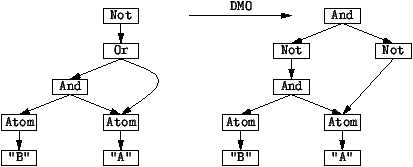

3.3 Specifying Basic Transformations with Rules
Transformation rules are the basic components of
transformations defined in Stratego. A rule transforms a term
at the root if the term matches the left-hand side of the
rule. The result is the instantiation of the right-hand side
of the rule.
Transformation
A transformation is a modification of a term. An example of a
transformation on propositional formulae is the transformation
of an arbitrary formula to disjunctive normal form.
Rule
Transformations can be achieved by consecutively applying a
number of small modifications to a term. In Stratego, a
transformation rule defines a single transformation step. A
rule consists of a label (e.g., DMO), a left-hand side
term pattern (e.g, Not(Or(x, y))) and a right-hand side
term pattern (e.g., And(Not(x), Not(y)).
Notation:
DMO : Not(Or(x, y)) -> And(Not(x), Not(y))
Term Patterns are Terms with Variables
A term pattern is a term with variables. That is, term patterns
are described by the rule
tp := x | C(tp1,...,tpn),
where x is a variable. Variables do not have to be
declared. All nullary (i.e., non-applied) constructors that
are not declared in the signature are assumed to be variables.
Applying Transformation Rules
A rule defines a one-step transformation at the root of
a term. A rule applies to a term if the term matches the
left-hand side pattern of the rule. If that is the case the
term is replaced with the right-hand side of the term in which
the variables are replaced by the corresponding sub-terms that
were matched in the left-hand side. Thus a transformation rule
succeeds to apply if the left-hand side matches, and fails to
apply if that is not the case. In general, a transformation
may succeed or fail to apply to a term
For example, the De Morgan rule DMO transforms the term
Not(Or(And(Atom("B"), Atom("A")), Atom("A")))
to
And(Not(And(Atom("B"), Atom("A"))), Not(Atom("A")))
Figure 17 illustrates the effect of this
transformation on the tree structure of a term.
Figure 17: Application of rule
DMO to the root of term Not(Or(And(Atom("B"),
Atom("A")), Atom("A"))). Note that the sharing of the
common subterm Atom("A") is preserved.
